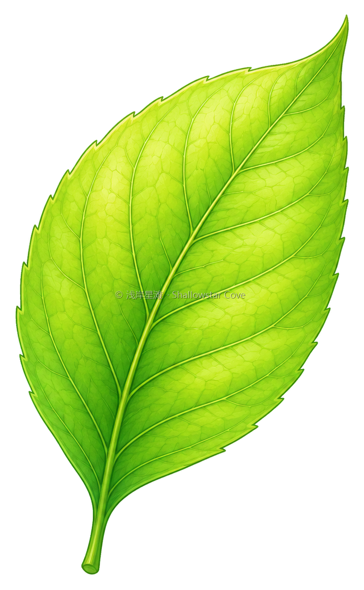
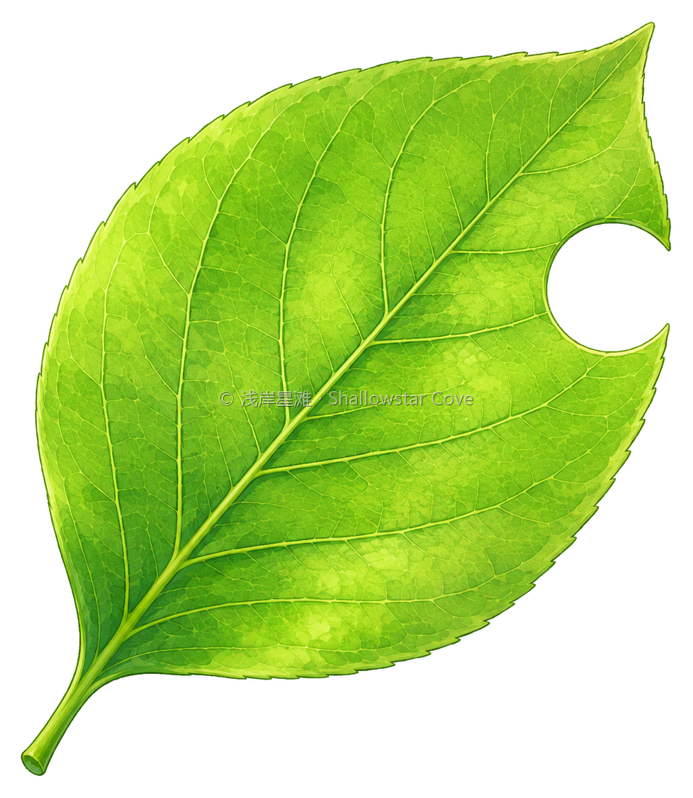
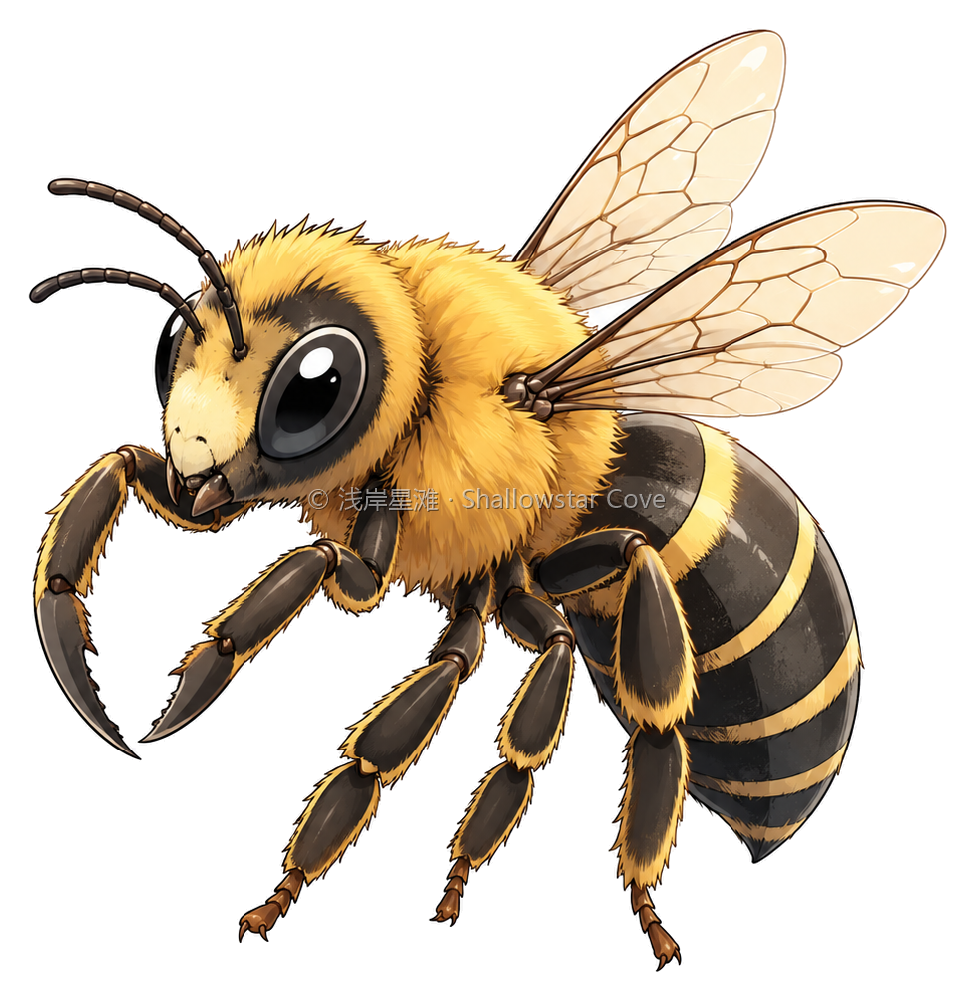
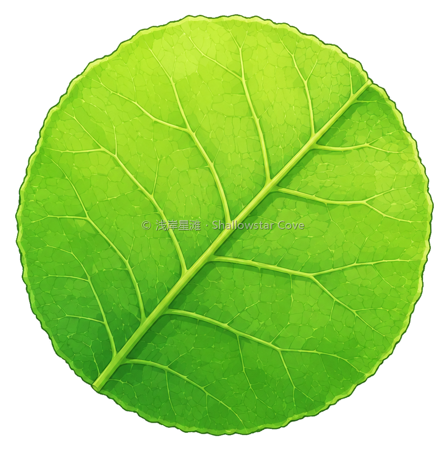
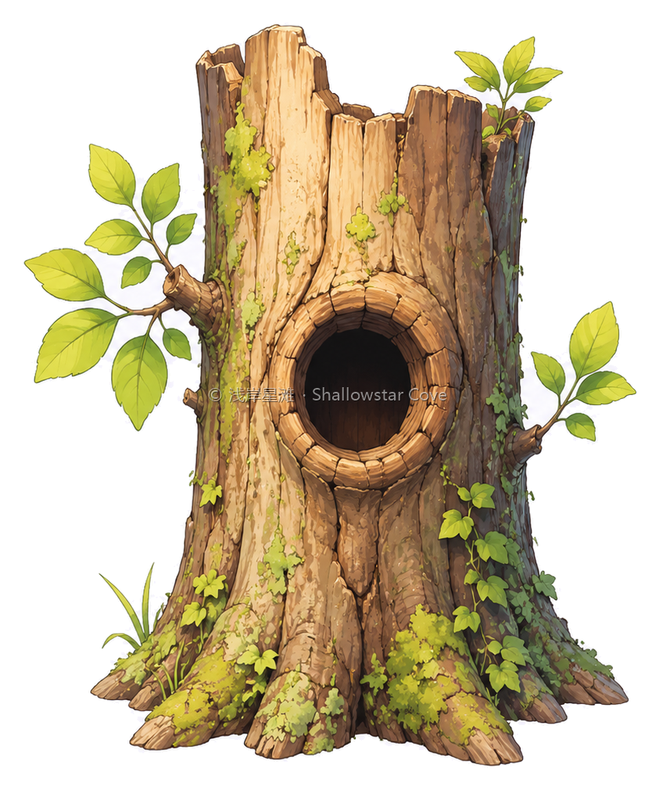
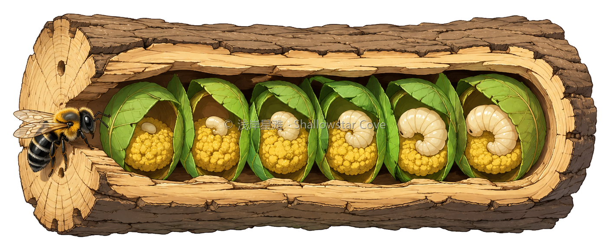

叶片裁缝
在浅岸星滩后方的森林里，有一只很小很认真的切叶蜂。它剪下的不是叶子，而是一间间柔软的小房间。
在浅岸星滩后方的森林里，有一只很小很认真的切叶蜂。它剪下的不是叶子，而是一间间柔软的小房间。
这一幕保留完整插画，用来当故事中转站。画面已经有蜂和叶子，所以这里不再叠加额外贴图，只负责引导你进入微观观察镜。




这里使用单独贴图来做真正的动画：完整叶、圆洞叶、圆形叶片和切叶蜂都是独立图层。
这张插画作为飞行过场，保留完整画面，不再叠第二只蜂。你可以继续跟随它，看看树洞入口。


这一页使用单独树洞贴图和抱叶飞行蜂贴图，让“进入巢穴”这个动作更清楚，也不会和完整插画打架。
这张完整插画作为巢穴揭示页。下一步进入剖面互动，点击不同巢室查看它为什么收集叶片。
每一片叶子都被认真带回家。它们被卷成房间、铺成墙壁，也被用来隔开一个又一个安静的小生命。

寄居蟹寻找贝壳，切叶蜂建造叶室。它们都在用自己的方式告诉我们：保护自己，也是一种很认真、很温柔的成长。